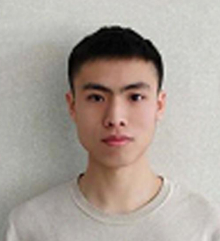

关于我

蔡迅
本科 - 工业设计
天津职业技术师范大学
联系方式：176956578969
求职职位：工业设计 / 产品设计
具备深圳知名设计公司工作经验，擅长沟通，与客户交流经验丰富，有项目管理经验。熟练使用 Rhino、KeyShot、ProE、PS、AI 等工业设计辅助软件。
参与项目主要包括：小家电、白色家电、3C 数码产品、医疗设备等。
对接品牌： 美的、小熊、中集、慧盈、PXN莱仕达、荣声 等。
工作经历
- 深圳市尚博工业设计（2020.11–2023.4） 设计师 - 项目组组长，参与30+设计方案，带队10+项目
- 深圳市乐牙工业设计（2020.4–2020.11） 设计师 - 完成多个设计方案
- 深圳莱仕达电子科技（2023.4–2023.7） 设计师 - 输出多款产品 ID 方案